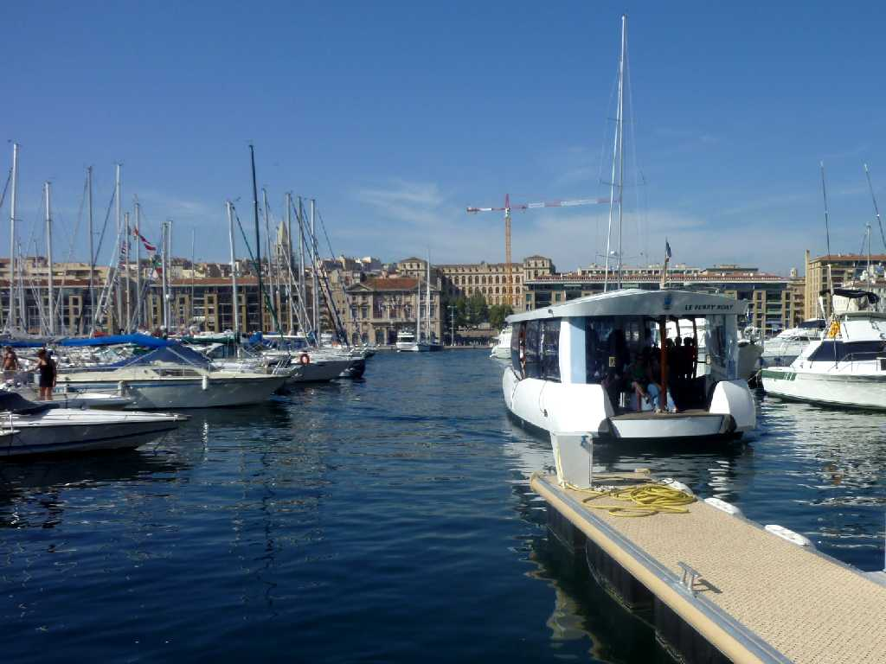
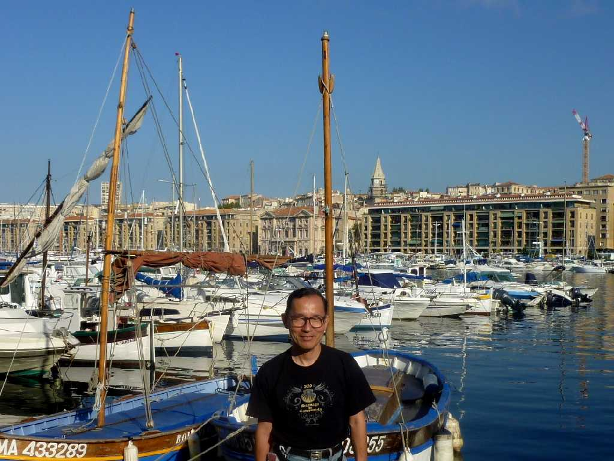
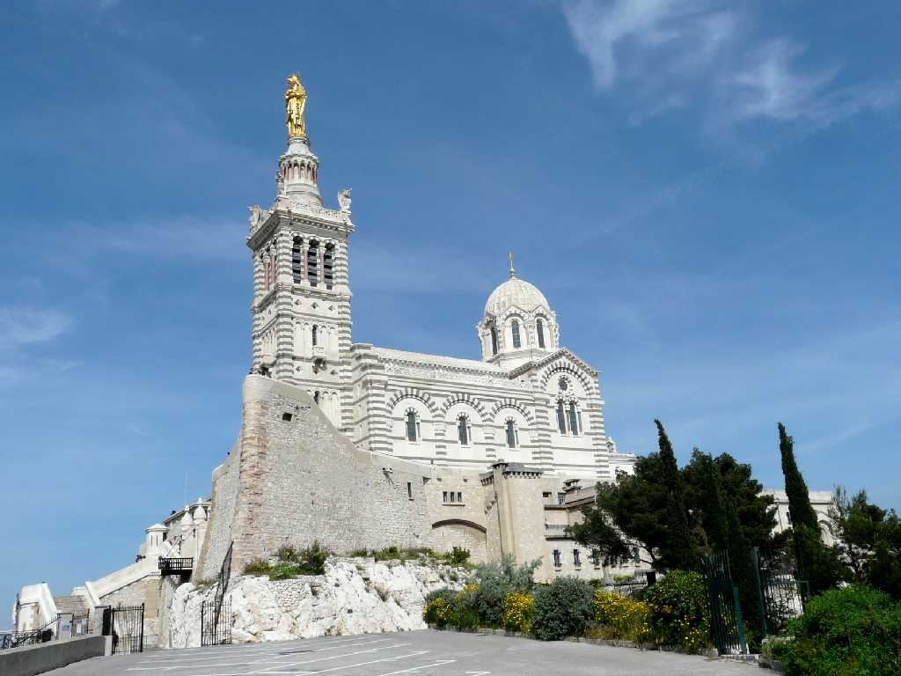
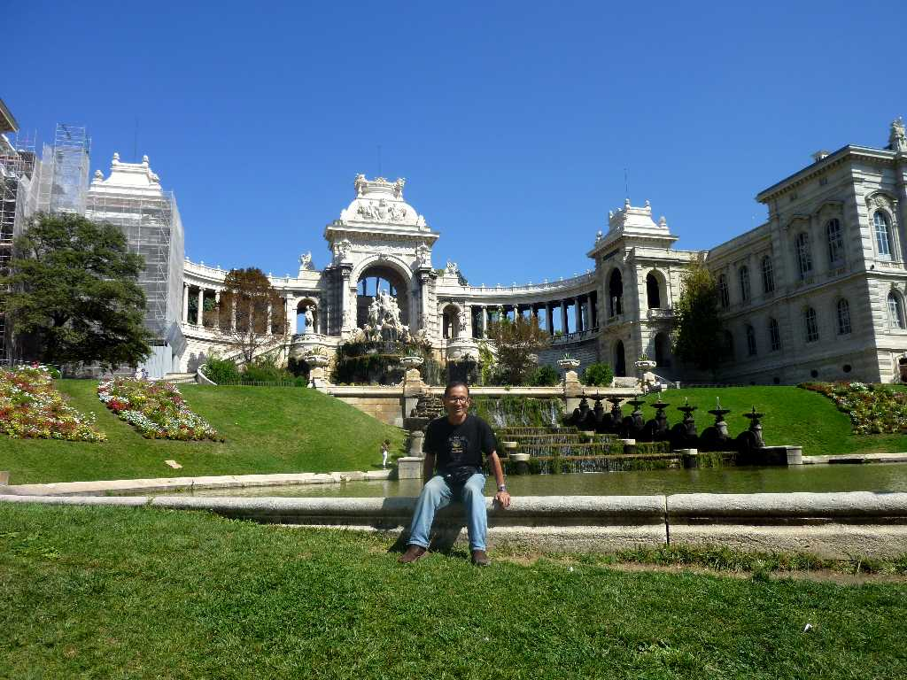

Vieux Port Marseille
マルセイユ旧港ヴューポールの有名な無料渡し舟に乗船 フランス最大の港湾都市で本場のブイヤベースが美味しい

September 5 2010 Vieux Port
紀元前６００年頃古代ギリシャのポカイア人が植民都市を築き紀元前後からローマ化が進み紀元前３世紀にはキリスト教文化が齎された その後１４８１年にフランス王国に入り１９世紀の港湾施設充実により地中海の交易都市として栄えた

Basilique Notre Dame de La Garde Marseille
丘の上に建つノートルダム･ド・ラ・ギャルド大聖堂はマルセイユのシンボルで街と港が一望できる

September 5 2010 Palais Longchamps
ロンシャン宮は１９世に創られたマルセイユに給水する重要な施設でこれに感謝し宮殿の様に改修したもの